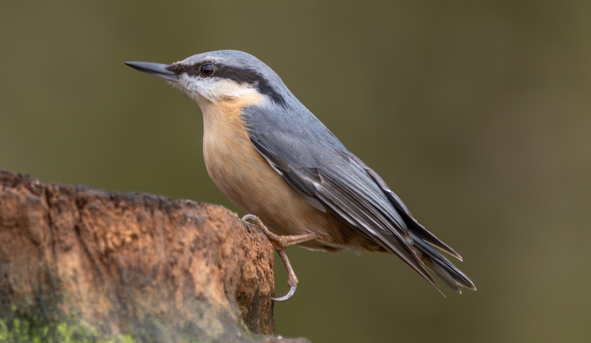

Sitta europaea
Identité et noms
Un petit oiseau descendant un tronc la tête en bas offre une belle occasion de découvrir la Sittelle torchepot, Sitta europaea. Ce passereau appartient aux Sittidae. Son nom anglais est Eurasian Nuthatch et son nom arabe خازن البندق الأوراسي ; le guide libanais emploie également le nom arabe كاسر الجوز الأوروبي. Longue d’environ 14 cm, pour une envergure proche de 24 cm, elle disparaît facilement derrière une branche. Son bec robuste et sa courte queue composent une silhouette ramassée caractéristique.
Identification
Le dessus est gris bleu, avec un bandeau sombre traversant l’œil et des joues et une gorge claires. Selon les populations, le dessous varie du blanchâtre au chamois, avec du châtain sur les flancs et sous la queue. Les mâles présentent souvent des flancs plus vivement colorés, mais la couleur seule ne suffit pas à déterminer le sexe ou la sous-espèce. Les grimpereaux sont bruns et finement dessinés dessus, avec un bec plus mince et courbe. La Sittelle de Neumayer, Sitta neumayer, est une autre espèce : queue, dessous et habitat doivent compléter l’examen du bandeau oculaire.
Habitat et alimentation
Les boisements anciens fournissent des surfaces de recherche alimentaire et des cavités de nidification. Forêts feuillues ou mixtes, parcs arborés et vieux vergers peuvent convenir si de grands arbres subsistent. La sittelle explore écorces et branches pour y trouver insectes, larves et araignées, se déplaçant dans différentes directions grâce à ses pattes. Graines et fruits à coque prennent davantage d’importance hors reproduction. Elle peut coincer un aliment dur dans une fente pour le marteler et constitue aussi des réserves. Cette souplesse alimentaire favorise son mode de vie généralement sédentaire.
Répartition et présence dans les pays arabes
Son aire traverse une grande partie de l’Eurasie tempérée et atteint le Maroc, où l’évaluation mondiale indique une présence résidente. Dans les pays arabes, sa répartition reste néanmoins localisée, sans former une bande continue entre Afrique du Nord et péninsule Arabique. Le guide Birds of Lebanon de 2026 la décrit comme nicheuse sédentaire très rare et localisée dans les bois et forêts. Ce statut diffère fortement de celui de la Sittelle de Neumayer, largement répandue. Une sittelle observée sur une falaise libanaise ne doit donc pas être attribuée à Sitta europaea sur la seule couleur gris bleu du dos.
Reproduction et développement
Le nid occupe une cavité existante, souvent un trou naturel ou une ancienne loge de pic. La femelle peut réduire l’entrée avec de la boue et garnir l’intérieur de fragments d’écorce. BTO indique une ponte habituelle de 6–8 œufs, une incubation féminine de 16–17 jours et un séjour des jeunes au nid d’environ 24–25 jours. Les deux parents les nourrissent. Ces durées constituent des repères biologiques, pas un calendrier libanais de reproduction. La sortie de la cavité ne signifie pas nécessairement que les jeunes sont déjà entièrement indépendants.
Novembre et observation responsable
Novembre permet d’observer la manipulation et le stockage des graines. Une sittelle résidente rencontrée alors n’est pas forcément une migratrice nouvellement arrivée. Restez sur les chemins, laissez-la circuler entre les arbres et notez le milieu autant que le plumage. Une photographie montrant la queue et les flancs est plus utile qu’une silhouette lointaine. N’ouvrez pas les cavités, n’arrachez pas l’écorce et ne dérangez pas les réserves alimentaires pour mieux voir. Des visites discrètes répétées apprennent davantage qu’une poursuite entre les branches.
Conservation
L’espèce est classée mondialement en Préoccupation mineure, LC, sans que cela garantisse la sécurité de chaque petite population. Conserver arbres matures, cavités naturelles et continuité des boisements protège ses ressources essentielles. Le guide libanais mentionne perte et dégradation des habitats, dérangement et changement climatique. Une vaste aire continentale ne compense pas la disparition d’un bois isolé. Une gestion favorable maintient les vieux arbres sans danger et une structure forestière variée, plutôt que d’éliminer systématiquement chaque branche morte ou tronc creux.
Références
British Trust for Ornithology — BirdFacts: Nuthatch; RSPB — Nuthatch; Oiseaux.net — Sittelle torchepot; BirdLife International / IUCN — Sitta europaea; UNDP / ABCL / Ministry of Environment — Birds of Lebanon, 2026, p. 338; GBIF — Sitta europaea.
Photographie : Gordon Best